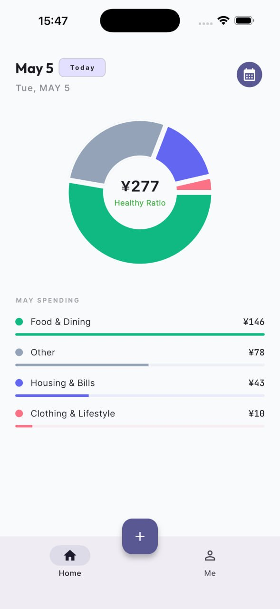
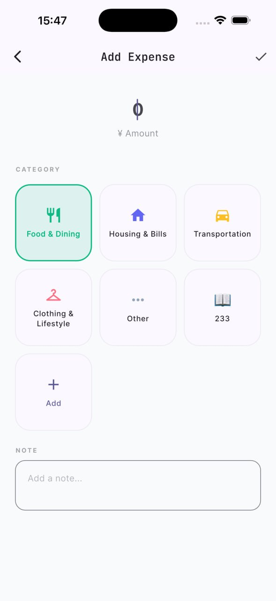
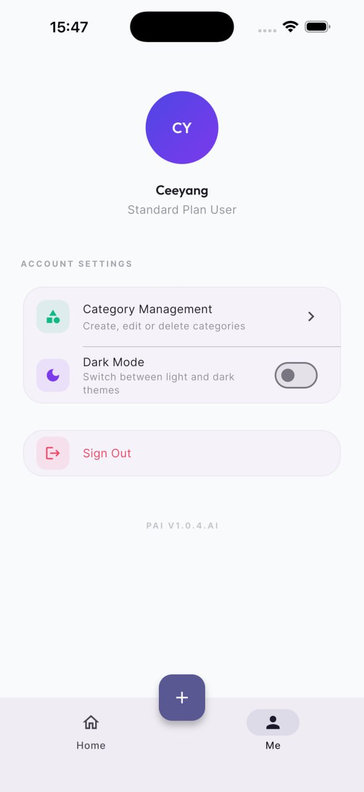
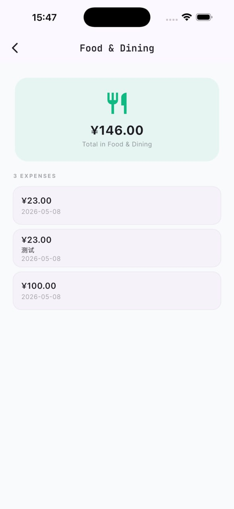

Healthy Ratio
¥277
首页环形图一眼看懂当月消费占比。
PaiPro · Personal AI Expense Tracker
从“记录支出”到“看懂趋势”，PaiPro 用健康消费比、分类统计和极简操作流程， 帮你把记账变成每天都愿意坚持的小习惯。
Healthy Ratio
¥277
首页环形图一眼看懂当月消费占比。
Quick Add
7+ 分类
餐饮、住房、交通等支出，轻点即可记账。
Category Detail
3 Steps
总额、明细、日期同屏展示，复盘更直接。


核心能力
首页环形图展示 Food & Dining、Housing & Bills、Other 等分类占比， 同时保留金额和进度条，快速识别消费结构。
Add Expense 页面将金额输入、分类选择、备注输入整合在同一屏，减少跳转和中断， 让记录成本接近“零心智负担”。
进入单个分类后，可直接查看总额、笔数和每一笔支出明细（含日期与备注）， 适合日常复盘和预算控制。
统一管理 Category、Dark Mode 等偏好设置，搭配 Sign In / Register 流程，保障从首次使用到长期记账都保持一致的体验。
Apple Keynote Style
我们把“看总览”和“记新账”做成舞台式叙事：当你向下滚动，文案与界面分层进入， 让核心价值逐段放大，而不是一次性平铺信息。
Storytelling Scroll
第二段强调“长期使用体验”：账户管理、分类详情、登录注册依次出场， 帮用户快速理解 PaiPro 的完整路径与产品成熟度。
总览看趋势
一键记支出
分类做复盘


界面预览
为什么是 PaiPro
PaiPro 以“最少操作 + 最清晰反馈”为设计原则，减少输入负担，增强可视化反馈， 让记账不再是任务，而是一种自然发生的日常行为。
从登录到记账，流程简洁统一，学习成本低。
以分类和金额为核心，不淹没在复杂报表里。
支持暗色模式与分类管理，长期使用更舒适。
Ready to start
更好的财务状态，从今天这一笔开始。
立即开始体验